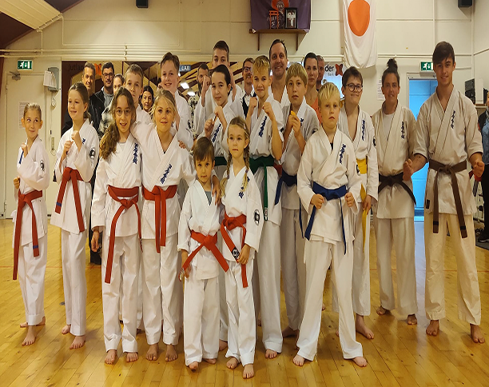

Graduering
Ashihara-karaten har et ret komplekst system af grader, der angiver det niveau og den ekspertise, en udøver har og formelt er anerkendt for. Det er en del dybere end bare et "sort bælte".
Graderne består af 10 Kyu grader og 3 Dan grader. Hver grad markeres med en farve som repræsenterer udøverens nuværende niveau. 3. Dan er det højeste, man kan opnå i Danmark.
Sensei Brian Hansen er gradueret 4. Dan. hvilket er en særlig en æresgraduering, som man kun kan tildeles af Kancho og hovedorganisationen i Japan.
Der er graduering 2 gange årligt I gradueringen viser du din udvikling, og du bliver vurderet om du er klar til at modtage dit næste bælte. Før du kan komme til graduering, skal du blive godkendt af din træner. Hvis din træner ikke godkender, kan du ikke komme til gradueringen.
